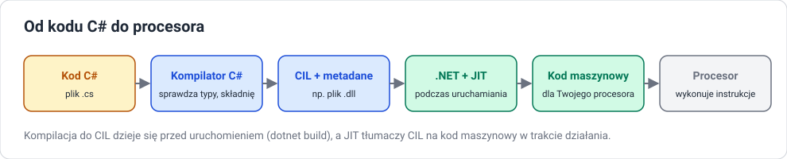

Od kodu do uruchomionego programu
Cel lekcji
Po tej lekcji będziesz umieć opisać etapy, przez które przechodzi program w C#: kompilację do kodu pośredniego CIL, powstanie zestawu (.dll), kompilację JIT podczas uruchamiania i pracę środowiska uruchomieniowego. Rozróżnisz też błędy kompilacji od błędów wykonania oraz kompilację JIT od kompilacji z góry (AOT).
Kompilator i interpreter — przypomnienie pojęć
| Kompilator | Interpreter | |
|---|---|---|
| co robi | tłumaczy cały program na inną postać, zanim program zostanie uruchomiony | wykonuje program na bieżąco, instrukcja po instrukcji |
| kiedy wykrywa błędy składni i typów | przed uruchomieniem | dopiero gdy dojdzie do błędnej linii |
| wynik | plik do uruchomienia | brak osobnego pliku wynikowego |
W praktyce współczesne języki łączą oba podejścia. C# jest kompilowany dwa razy: najpierw do kodu pośredniego, potem — podczas działania — do kodu maszynowego.
Droga programu C

Etap 1: kompilacja do CIL
Polecenie dotnet build uruchamia kompilator C# o nazwie Roslyn. Kompilator:
- czyta wszystkie pliki
.csprojektu, - sprawdza składnię (średniki, nawiasy, słowa kluczowe),
- sprawdza typy (czy do
intnie przypisujemy tekstu, czy metoda istnieje, czy ma tyle parametrów), - jeśli nie ma błędów — tworzy kod pośredni CIL (Common Intermediate Language, dawniej MSIL).
CIL to instrukcje dla wyimaginowanego procesora, niezależne od tego, czy program będzie działał na Intelu, AMD czy ARM. Fragment CIL dla int c = a + b; wygląda mniej więcej tak:
ldloc.0 // połóż na stosie zmienną a
ldloc.1 // połóż na stosie zmienną b
add // dodaj dwie wartości ze szczytu stosu
stloc.2 // zapisz wynik w zmiennej c
Nie piszemy w CIL ręcznie — to zadanie kompilatora.
Etap 2: zestaw (assembly)
Wynikiem kompilacji jest zestaw (assembly) — plik .dll zawierający:
| Część | Co zawiera |
|---|---|
| kod CIL | wszystkie metody programu |
| metadane | opis typów: jakie są klasy, metody, parametry i ich typy |
| manifest | nazwa i wersja zestawu, lista zestawów, od których zależy |
Dzięki metadanym środowisko wie, co jest w zestawie, bez dodatkowych plików nagłówkowych. Dla aplikacji konsolowej powstaje też mały plik uruchamiający (.exe na Windows), który startuje .NET i ładuje .dll.
Etap 3: uruchomienie i JIT
Gdy uruchamiasz program, CLR:
- ładuje zestaw do pamięci,
- sprawdza, czy kod CIL jest poprawny i bezpieczny,
- przy pierwszym wywołaniu każdej metody kompilator JIT (Just-In-Time) zamienia jej CIL na kod maszynowy konkretnego procesora,
- kolejne wywołania tej metody korzystają z gotowego kodu maszynowego.
JIT zna dokładnie procesor, na którym działa program, więc może użyć jego specjalnych instrukcji. Dlatego ten sam plik .dll działa na różnych komputerach i na każdym jest optymalizowany osobno.
Etap 4: praca środowiska w tle
Przez cały czas działania programu CLR:
- przydziela pamięć na obiekty tworzone przez
new, - uruchamia garbage collector, który odnajduje obiekty, do których nie prowadzi już żadna zmienna, i zwalnia ich pamięć,
- zgłasza wyjątki, gdy dzieje się coś niedozwolonego (dzielenie liczby całkowitej przez zero, indeks poza tablicą, odwołanie przez
null).
Dwa rodzaje błędów
| Błąd kompilacji | Błąd wykonania (wyjątek) | |
|---|---|---|
| kiedy | podczas dotnet build |
podczas działania programu |
| kto wykrywa | kompilator | środowisko uruchomieniowe (CLR) |
| skutek | program w ogóle nie powstaje | program przerywa działanie z komunikatem |
| przykład | int x = "abc"; → CS0029 |
int[] t = new int[3]; t[5] = 1; → IndexOutOfRangeException |
Statyczne typowanie przesuwa jak najwięcej błędów do pierwszej kolumny — tam łatwiej je znaleźć i poprawić.
Komunikat kompilatora podaje: plik, wiersz i kolumnę, numer błędu i opis. Numer (np. CS0029) możesz wpisać w wyszukiwarkę, żeby znaleźć wyjaśnienie w dokumentacji.
Debug i Release
| Debug (domyślny) | Release | |
|---|---|---|
| polecenie | dotnet build |
dotnet build -c Release |
| optymalizacje | wyłączone | włączone |
| informacje dla debugera | pełne (plik .pdb) |
ograniczone |
| zastosowanie | pisanie i szukanie błędów | wersja dla użytkowników |
Publikowanie i kompilacja z góry
dotnet publish -c Release # program wymagający zainstalowanego .NET
dotnet publish -c Release -r win-x64 --self-contained # program razem ze środowiskiem .NET
Istnieje też kompilacja Native AOT (Ahead-Of-Time): cały program zamienia się na kod maszynowy już podczas publikacji, bez JIT. Program startuje szybciej i nie wymaga .NET, ale działa tylko na systemie i procesorze, dla którego go zbudowano. Na zajęciach używamy standardowego modelu z JIT.
Kod zarządzany a niezarządzany
Kod zarządzany działa pod kontrolą CLR: ma automatyczne zarządzanie pamięcią, kontrolę typów i wyjątki. Kod niezarządzany (np. program w C skompilowany do kodu maszynowego) działa bezpośrednio na systemie — programista sam przydziela i zwalnia pamięć, a błąd może uszkodzić dane innych części programu bez żadnego komunikatu.
Sprawdź się
1. Kolejność etapów
Ułóż w kolejności i opisz jednym zdaniem: JIT, plik .cs, procesor, Roslyn, zestaw .dll, CLR.
2. Po co kod pośredni
Dlaczego kompilator C# nie tworzy od razu kodu maszynowego? Podaj dwie zalety kodu pośredniego.
3. Rodzaj błędu
Dla każdego przykładu określ, czy to błąd kompilacji, czy wyjątek w czasie działania: brak średnika, dzielenie 10 / zero, gdzie zero to zmienna int o wartości 0, wywołanie nieistniejącej metody, odczyt t[10] z tablicy 5-elementowej, przypisanie double do int bez rzutowania.
4. Co jest w zestawie
Wymień trzy części zestawu .dll i wyjaśnij, do czego CLR potrzebuje metadanych.
5. Debug czy Release
Zbuduj dowolny program w trybie Debug i Release. Porównaj zawartość folderów bin/Debug i bin/Release. Jakie pliki są w obu?